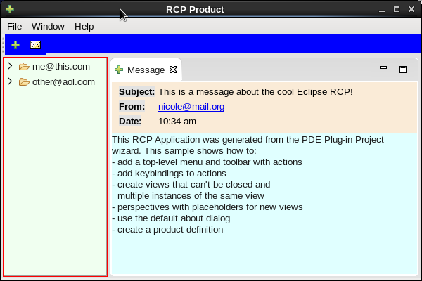
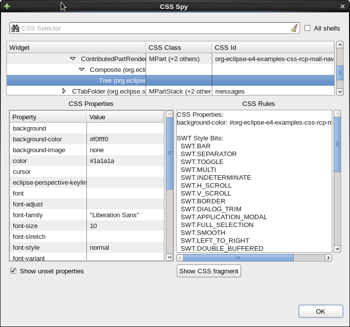

CSS Styling
Tips for an RCP app
Created by Bogdan Gheorge / IBM Canada
Created by Paul Webster / IBM Canada / @paulweb515
What is the Styling Engine?
#org-eclipse-ui-editorss {
swt-tab-renderer: url('org.eclipse.e4.ui.workbench.renderers.swt.CTabRendering');
swt-unselected-tabs-color: #D6DDE5 #D6DDE5 #D6DDE5 100% 100%;
swt-outer-keyline-color: #D6DDE5;
swt-inner-keyline-color: #D6DDE5;
swt-tab-outline: #D6DDE5;
color: #D6DDE5;
swt-tab-height: 8px;
padding: 0px 5px 7px;
}
Anatomy of a Styling Engine

Styling Selectors
- SWT widget type {Shell, Button, Table}
- Class name {.topShell, .leftTrim, .active}
- ID name {#PerspectiveSwitcher}
- Model name {.MPartStack, .MTrimBar}
CSS Cascade

Specificity
- Every element has a value of 1
- Every class has a value of 10
- Every id has a value of 100
- Add them up for the specificity value
- In case of a clash, higher specificty value wins
Property Handlers: Control
| SWT Method |
CSS Property Name |
CSS Example |
| setBackground(Color) |
background-color |
Button { background-color: #FF0000 } |
| (vertical gradient) |
background-color |
Button { background-color: #FF0000 #00FF00 100% } |
| (horizontal gradient) |
background-color |
Button { background-color: #FF0000 #00FF00 100% false } |
| setBackgroundImage(Image) |
background-image |
Button { background-image: some url } |
Property Handlers: CTabFolder
| SWT Method |
CSS Property Name |
CSS Example |
| setMaximized(boolean) |
swt-maximized |
CTabFolder { swt-maximized: true } |
| setMinimized(boolean) |
swt-minimized |
CTabFolder { swt-minimized: true } |
| setMaximizeVisible(boolean) |
swt-maximize-visible |
CTabFolder { swt-maximize-visible: true } |
| setMinimizeVisible(boolean) |
swt-minimize-visible |
CTabFolder { swt-minimize-visible: true } |
| setMRUVisible(boolean) |
swt-mru-visible |
CTabFolder { swt-mru-visible: true } |
| setSimple(boolean) |
swt-simple |
CTabFolder { swt-simple: true } |
| setSingle(boolean) |
swt-single |
CTabFolder { swt-single: true } |
Where is the Code?
Themes for your Application
- Eclipse default themes are in org.eclipse.ui.themes plugin.
- Themes are the way to organize style sheets for your application.
- Themes are added using
org.eclipse.e4.ui.css.swt.theme extension point.
<theme
basestylesheeturi="css/e4_classic_winxp.css"
id="org.eclipse.e4.ui.css.theme.e4_classic"
label="%theme.classic"/>
- Theme properties have to be added to the product definition:
<property
name="cssTheme"
value="org.eclipse.e4.ui.css.theme.e4_default"/>
<property
name="applicationCSSResources"
value="platform:/plugin/org.eclipse.ui.themes/images/"/>
Create a Theme - Step 1
- Create a new Eclipse Plugin Project
- Generate an Activator
- No to 3.x rich client application
Create a Theme - Step 2
- Create a folder
- Write a stylesheet
.infoHeader {
background-color: #E2E2E2;
}
#org-eclipse-e4-examples-css-rcp-mail-view Composite {
background-color: #FAEBD7;
}
#org-eclipse-e4-examples-css-rcp-mail-navigationView Tree {
background-color: '#org-eclipse-e4-examples-css-rcp-mail-honeyDew';
}
Create a Theme - Step 3
- Configure the plugin project
- Fill out the extension point
<extension
point="org.eclipse.e4.ui.css.swt.theme">
<theme
basestylesheeturi="css/rcp_mail.css"
id="org.eclipse.e4.examples.css.rcp.mail"
label="RCP Mail CSS"/>
</extension>
- Fill out product properties
<property
name="cssTheme"
value="org.eclipse.e4.examples.css.rcp.mail"/>
<property
name="applicationCSSResources"
value="platform:/plugin/org.eclipse.ui.themes/images/"/>
Some things that can be themed
.MTrimmedWindow.topLevel, .MTrimmedWindow - the workbench window.MTrimBar#org-eclipse-ui-main-toolbar, .MTrimBar - the window trim.MPartStack.active, .MPartStack - view stacks.MPart.highlighted, .MPart.busy, .MPart - the tab of a view or editorcontrol.setData(CSSSWTConstants.CSS_CLASS_NAME_KEY, "infoHeader"); - custom target widgets
Native OS Colors
Can be found as constants in the org.eclipse.swt.SWT class.
| SWT Color Constant |
Description |
| COLOR-WIDGET-DARK-SHADOW | System color used to paint dark shadow areas (value is 17). |
| COLOR-WIDGET-NORMAL-SHADOW | System color used to paint normal shadow areas (value is 18). |
| COLOR-WIDGET-LIGHT-SHADOW | System color used to paint light shadow areas (value is 19). |
| COLOR-WIDGET-HIGHLIGHT-SHADOW | System color used to paint highlight shadow areas (value is 20). |
| COLOR-WIDGET-FOREGROUND | System color used to paint foreground areas (value is 21). |
| COLOR-WIDGET-BACKGROUND | System color used to paint background areas (value is 22). |
| COLOR-WIDGET-BORDER | System color used to paint border areas (value is 23). |
| COLOR-LIST-FOREGROUND | System color used to paint list foreground areas (value is 24). |
CSS vs 3.x Themes
Roger's Themes
http://eclipsecolorthemes.org/
Roger's Themes
CSS with 3.x Themes
https://wiki.eclipse.org/Eclipse4/CSS/Bridge
.MPartStack.active.noFocus {
swt-selected-tab-fill: '#org-eclipse-ui-workbench-ACTIVE_NOFOCUS_TAB_BG_START'
'#org-eclipse-ui-workbench-ACTIVE_NOFOCUS_TAB_BG_END' 100% 100%;
font-family: '#org-eclipse-ui-workbench-TAB_TEXT_FONT';
}
CSS Tools
- E4 CSS Spy (Incubation)
- Specificity Calculator
- E4 Orion CSS Preference editor (Incubation)
CSS Spy
Use ALT+SHIFT+F5 to activate it.

CSS Spy

CSS Scratchpad
Use ALT+SHIFT+F6 to activate it.
Specificity Calculator
http://specificity.keegan.st/

CSS File Editor
Orion based editor